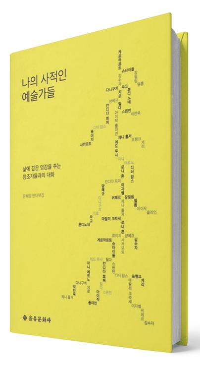

글. 편집실
소비하는 일상 속에
만드는 시간을 더해 보세요.
현대인들은 끊임없이 소비합니다. 아침에 눈을 뜨면 스마트폰으로 콘텐츠를
소비하고, 출근길에는 이어폰으로 음악을 소비하며, 퇴근 후에는 배달
음식과 영상을 소비합니다. 우리는 하루 종일 무언가를 받아들이고
구매하지만, 정작 내 손으로 직접 만들어내는 경험은 점점 사라지고
있습니다.
한국 사회는 특히 빠른 속도와 효율을 중시하면서 '직접 만드는 일'을
비효율적인 것으로 치부해 왔습니다. 살 수 있는 걸 왜 만드냐는 시선,
시간 낭비라는 편견이 우리에게서 창조의 기쁨을 앗아갔습니다. 하지만
손끝으로 실을 엮고, 반죽을 치대고, 물감을 칠하는 그 순간, 우리는
단순한 소비자가 아닌 창조자로 거듭납니다.
무언가를 만들어낸다는 것은 삶의 주도권을 되찾는 일입니다. 내가
선택하고, 고민하고, 실패하고, 다시 시도하는 모든 과정이 나를 살아있게
만듭니다. 완성된 작은 결과물은 수많은 상품을 구매하는 것보다 깊은
만족을 선사합니다. 당신이 만드는 것이 결국 당신을 만듭니다. 강박을
내려놓는 순간, 역설적으로 진정한 행복이 찾아옵니다.
윤혜경
<나의 사적인 예술가들>
저자는 세계 각지를 다니며 자신만의 방식으로 무언가를 창조하는
사람들을 만났습니다. 그들은 캔버스 위에 그림을 그리고, 공간을
설계하고, 글을 쓰며 각자의 세계를 만들어냅니다. 19인의 예술가들은
단순히 유명한 작가나 거장이 아니라, 손으로 직접 창작하며 삶의
의미를 찾아가는 사람들입니다. 소비가 아닌 창작으로 살아가는 그들의
이야기는 '만드는 사람'의 진정한 의미를 보여줍니다.
